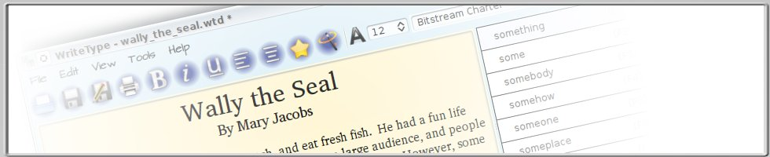
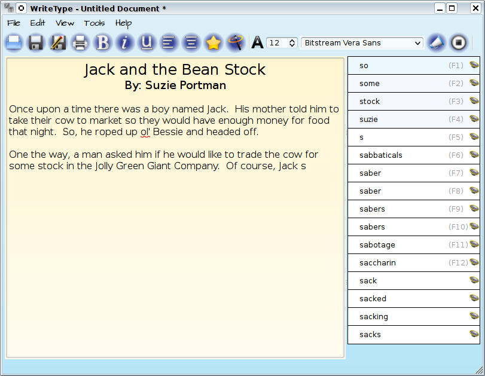
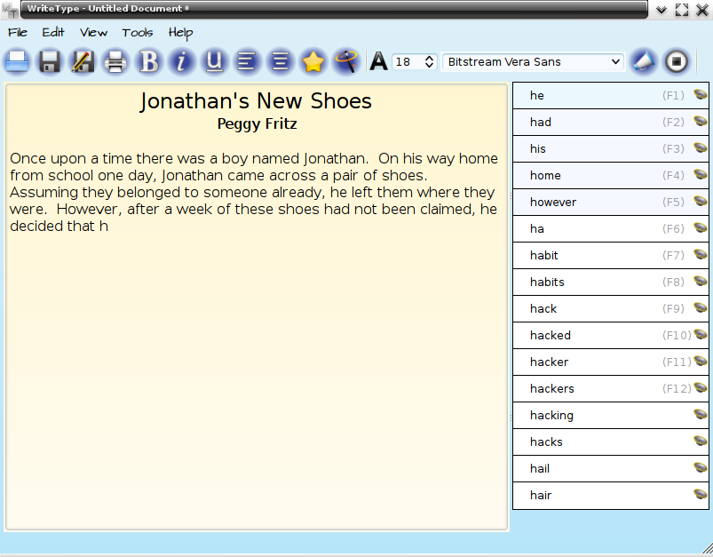
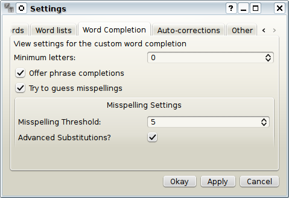

What is WriteType?
WriteType is a free (and open source) program that helps students
experience success in writing. It is designed especially for schools
to transform technology from a barrier into an opportunity for
success. Some major features include:
- Word Completion: As students type, word suggestions appear on the
right-hand side of the screen to complete the word being typed.
Clicking on the desired word will finish the word. WriteType will
also learn a student’s habits over time and make more relevant
suggestions based on what has already been written.
- Reading Back the Document: WriteType will read back written text,
allowing students to catch errors they may not have caught reading
it back themselves. It will also, optionally, read back words as
they are typed.
- Highlighting: Sections of the document can be quickly highlighted
while typing or while listening to the document being read
back. This lets students quickly flag areas they need to go back and
review.
- Grammar checking: WriteType will underline simple grammar and
formatting mistakes in the document, and offer to make the necessary
revision.
- Auto-correction: Common errors, such as typing isnt instead of
isn’t, will be corrected automatically without the need for
intervention.
- Multi-lingual: WriteType is available in English, Spanish, Dutch,
Italian, Russian, Bulgarian, and Basque.
Download WriteType
The current version of WriteType is 1.3.163
Windows Users:
- The Windows Installer (x86) is the
easiest way for Windows users to use WriteType. It contains an
automatic installer that will install it on one computer.
- The Windows Standalone (x86) can be used to install WriteType on a
flash drive or a LAN. (Simply extract the zip folder to a flash
drive or a network-accessible location to install.)
GNU/Linux Users:
- Ubuntu/Debian users can use the command “sudo apt-get install
writetype”, or locate the “writetype” package in Synaptic Package
Manager.
- Fedora users can download an rpm package.
- A tar.gz package is available for other distributions
Developers:
- A source package containing the
source of the latest stable release is available for interested
developers.
Unstable Releases:
- Cloning the bzr branch is the fastest way to
get the most current source.
- The Launchpad page may also be of interest to developers.
Documentation
Basic Usage
To:
- Open a document — File → Open or click on the
 button
button
- Save a document — File→ Save or click on the
 button
button
- Please note that WriteType saves in the html format. This is the
same format used by web browsers. Because of this, depending on
your system configuration, you may not be able to simply click
on a file to open it in WriteType. When opening files, please
use File → Open.
- Save a document under another name — File → Save As… or click
on the
 button
button
- Print the current document — File → Print, or click on the
 button
button
- When you print, WriteType uses the standard printer settings on
your computer.
- Read back your current document — Edit → Speak, or click on
the
 button
button
- If you select a portion of the document and click on the Speak
button, only the selected portion will be read back.
Highlighting
WriteType supports a feature called “highlighting”. This allows a
student or teacher to mark areas of the document for later reference.
This is useful for the student to remember mistakes after listening to
the document being read out loud, or for the teacher to flag areas that
need to be reviewed.
There are two ways to highlight parts of the document: by using the
Highlight Tool, or by turning on Highlight Mode. The Highlight Tool
is the
 button on the toolbar. To use the Highlight Tool, first
click on a word in the document. Then, click the Highlight Tool button.
The word under the cursor will be highlighted. If you would like to
highlight more than one word, select the area you would like to
highlight, and then click on the Highlight Tool button. The selected
area will be highlighted. If the cursor is underneath a highlighted
section, clicking the Highlight Tool button will remove the
highlighting.
button on the toolbar. To use the Highlight Tool, first
click on a word in the document. Then, click the Highlight Tool button.
The word under the cursor will be highlighted. If you would like to
highlight more than one word, select the area you would like to
highlight, and then click on the Highlight Tool button. The selected
area will be highlighted. If the cursor is underneath a highlighted
section, clicking the Highlight Tool button will remove the
highlighting.
Highlight Mode works similarly to the Highlight Tool. Highlight Mode
can be enabled by clicking on the
 icon in the toolbar. It can be disabled by clicking on it
again. The only difference between Highlight Mode and the Highlight Tool
is that it does not allow text to be entered while enabled. The main
advantage to using it is speed. Every time you click on the document
with highlight mode enabled, the word under the cursor will be
highlighted. Every time you select text, the selected text will
immediately be highlighted. The speed makes it possible to quickly
highlight words when hearing the document read back, for instance. As
with the Highlight Tool, clicking on a highlighted section in Highlight
Mode will remove the highlighting.
icon in the toolbar. It can be disabled by clicking on it
again. The only difference between Highlight Mode and the Highlight Tool
is that it does not allow text to be entered while enabled. The main
advantage to using it is speed. Every time you click on the document
with highlight mode enabled, the word under the cursor will be
highlighted. Every time you select text, the selected text will
immediately be highlighted. The speed makes it possible to quickly
highlight words when hearing the document read back, for instance. As
with the Highlight Tool, clicking on a highlighted section in Highlight
Mode will remove the highlighting.
Other features
For certain situations and usages, WriteType has additional features
built-in.
- Enable Distraction-free mode
- If the typist has difficulty maintaining concentration while
typing, distraction-free mode is an alternative interface that
displays full screen and only includes the text box and the list
of completions. All toolbar items, menus, and other interface
elements of the desktop shell are hidden. To enable it, go into
the “View” menu and click “Distraction-free mode”.
- Change the size of the list of suggestions
- Bigger isn’t always better, especially when you have to sift
through all of the words in order to find a
suitable replacement. To change the size of the word list, go to
File → Settings and click on the second tab, entitled
“Word lists”. There will be different sizes to choose from.
Please be aware that, for most uses, the smallest list is too
small and the largest list is too big. The default list
is recommended. Also, please note that, on slower computers, the
smaller lists will increase performance.
- Add a list of custom words
- In some situations, the default list of words is not sufficient.
In this case, go to File → Settings. In the first tab
(entitled “Custom Words”) you will see a text box. In this text
box, you can enter one word per line that you would like to
appear in the list of words. Even if the words already exist in
the list of words, putting them here will bring them to the top
of the list of suggestions.
- Change the reading speed
- If the read-back speed is too fast or too slow, it can easily
be changed. Go to File → Settings and click on the last
tab, entitled “Other”. Adjust the “Reading Speed” slider to
your liking.
Advanced Usage
For more advanced usage, WriteType has a number of additional settings
and features.
- Wait a few letters before suggestions kick in
- Some individuals may, due to the novelty of the word completion
list, enter only the first letter of a word and then spend a
great deal of time looking for the word in the list of
possible completions. In order to avoid this, go to File →
Settings and click on the “Word Completion” tab. Change the
“Minimum letters” box to your liking. When this is anything
above 0, WriteType will wait for the designated number of
letters to be typed before offering suggestions.
- Try to guess misspellings
- One problem with word completion is that it will not work if the
beginning letters of the word are misspelled. WriteType attempts
to combat this by offering a feature that will try to
guess misspellings. This is enabled by default, but may make
older computers extremely slow. In other words, if you need to
speed up WriteType, this is what you are looking for. Open up
File → Settings and go to the “Word Completion” tab. This
feature can be enabled or disabled with the “Try to guess
misspellings” checkbox.
- When enabled, there are additional parameters that can
be changed. The “Misspelling threshold” prevents overcrowding in
the suggestion box. WriteType assumes the correct spelling until
there are fewer than this many suggestions, after which point it
will begin searching for possible misspellings.
- The “Advanced substitutions” checkbox specifies whether or not
to make more advanced substitutions. Checking this box will
enable WriteType to find even more misspellings than it could
with a standard misspelling check. This is optional, however,
because it slows down the program quite a bit in exchange for
only a small number of possible corrections. If you notice
WriteType is slow, but do not want to disable misspelling
detection altogether, disabling only advanced substitutions will
significantly increase your speed.
- Set the default font
- To change the default font, go to File → Settings and
click on the “Other” tab. Select the font you would like from
the “Default font” drop-down box. Checking “System Default” will
use the system default instead.
- Auto-correction
- Auto-correction will automatically fix the most common mistakes
made while typing without the need for user interaction. It also
allows the typist to make shortcut words for longer words
and phrases. For example, WriteType could replace “me” with the
typist’s name.
- To enable this feature, go into the options menu and click on
the “Auto-completions” tab. Click the “contractions” checkbox at
the bottom if you would like corrections such as “wasnt”
=> “wasn’t”. Also, the “Auto-correction settings” table can
be used to define additional corrections. Just double click on a
cell to edit it.
- Change the TTS engine
- Not all TTS engines work well on all computers. If speech
synthesis does not work properly upon installation, chances are
that changing the engine will help this. In File →
Settings, click the last tab, entitled “Other”. In the
drop-down menu, select your preferred TTS engine. Please note
that on GNU/Linux computers, either Festival (for “festival”) or
eSpeak (for “eSpeak” and “pyttsx”) must be installed. On Windows
computers, eSpeak is recommended, if it works properly.
Screenshots



Contributors
Thank you to everyone who contributes to WriteType!
- Programming: Max Shinn
- Spanish Translations: Emilio Lopez
- Basque Translations: Gorka Azkarate
- Dutch Translations: Harm Bathoorn
- Russian Translations: Sergey Basalaev
- Bulgarian Translations/Fedora Package: Galin Petrov
- Italian Translations: Agnese Dal Borgo
- Italian Translations: Riccardo Murri
- French Translations: Clm
- Debian Packages: Miriam Ruiz
How can I help?
There are many ways that anybody can contribute to WriteType
The Most Important Way to Contribute
The most important thing that you can do is to get WriteType into the
hands of children and schools! Even if WriteType was the most perfect
piece of software ever created, it would be worthless if no students
benefited.
Other Ways to Contribute
If you are interested in any of the following, you can either use the
contact form, or email Max. You may also be interested in the
Launchpad page. Your help is
greatly appreciated!
- Submitting feature requests: If you are a student or an educator,
WriteType needs your help! You know what students need more than
anything else, and most of the features currently found in WriteType
came from suggestions brought up during presentations.
- Submitting bug reports: If you happen to find something in WriteType
that doesn’t seem to work quite right, please tell me what’s going
on so I can fix it.
- Packaging: If you have a knack for packaging, this would help get
WriteType out to more people. I am especially in need of people
interested in packaging it for Windows, since my experience with
this operating system is minimal. It would also be nice to get
WriteType into the repositories of various GNU/Linux distributions,
and to have an OSX package.
- Translating: If you speak a language other than English fluently,
this too would help make WriteType more available.
- Contributing to development: If you have experience programming and
would like to submit a patch or make more serious contributions,
your work would be very much appreciated.